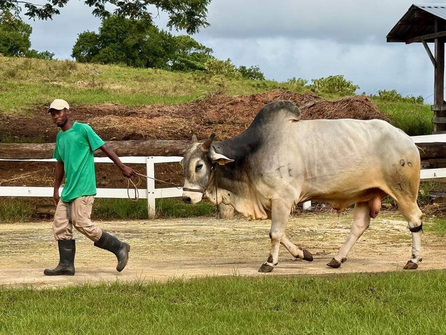
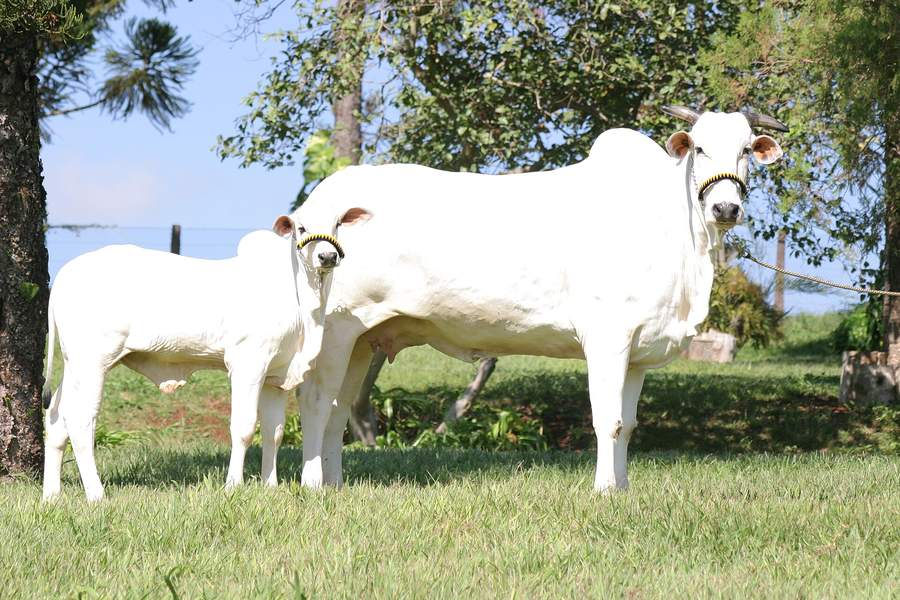

Introduction
The Ongole of Andhra Pradesh sailed to Brazil and became the Nelore — backbone of the world's largest beef herd.
Pure white, huge and heat-proof, the Nelore proved zebu beef could lead the world. One Nelore cow, Viatina-19, sold for a record $4.8 million.
Ongole / Nellore at a Glance
| Origin | Ongole & Nellore districts, Andhra Pradesh, India |
|---|---|
| Also called | Nellore (India) — Nelore (Brazil) |
| Type | Beef zebu breed |
| Dressing percentage | 55–60% carcass yield |
| Coat | Pure white hair over black skin |
| Record | Cow Viatina-19 sold for $4.8 million |
| Price (indicative) | US $1,000–3,000 per breeding animal |
Varieties & Types of Ongole / Nellore
The same breed carries two famous names:
- Ongole / Nellore (India) — The original Indian form from Andhra Pradesh — large white zebu, strong and heat tolerant.
- Nelore (Brazil) — The Brazilian development of the same blood — numbering in the millions and leading the world’s largest beef herd.
Characteristics

- The Hump — A massive hump — among the largest of all zebu breeds.
- Pure White Coat — White hair over black skin — nature's sun shield.
- Huge Frame — Tall, long and heavy — a true beef giant.
- Long Legs — Long legs for walking far in hot country.
Strengths
- Backbone of Brazil's beef herd
- Extreme heat tolerance
- Huge, impressive frame
- Record-value elite genetics
- Hardy, low-input keeper
Keep in Mind
This is a beef breed — milk is only enough for the calf. Ordinary breeding animals sit in the price range given; elite show and embryo lines sell far above it.
Beef Production
Ongole/Nelore dress out at 55–60%. Brazil fattens millions of Nelore cattle every year.
Elite show genetics reach record prices at auction — the Nelore cow Viatina-19 sold for a world-record $4.8 million.
Price & Buying Tips
Typical price — international (indicative): US $1,000 – 3,000 — per breeding animal; elite Nelore sell for fortunes. All prices are indicative and move with the market.
Ordinary breeding animals sit in this range. Brazil pays top prices, embryos trade worldwide, and elite lines sell far above the range.
Before You Buy — Checklist
- Body frame & muscling
- Legs & hooves sound
- Breeding organs normal
- Teeth & age checked
- Body condition score 3+
- Vaccination & deworming record
- Temperament calm
- Weight on scale, not by eye
Photos of the Breed

Frequently Asked Questions
Are Ongole, Nellore and Nelore the same breed?
Yes — Ongole is the Indian home name (Nellore district), and in Brazil the same blood is called Nelore, where it leads the world’s largest beef herd.
Which cow sold for $4.8 million?
Viatina-19, a Nelore cow in Brazil — the world-record price for a cow, showing the value of elite Nelore genetics.
Why is the Ongole white?
White hair over black skin: the white coat reflects the sun while the dark skin protects against it — a natural sun shield for the tropics.
What is the price of an Ongole animal?
About US $1,000–3,000 per breeding animal (indicative); elite Nelore sell for fortunes.
Free Guide & Related Breeds
All 25 breeds — with bull, cow and calf photos, varieties, production charts and Urdu summaries — are in our free 196-page pictorial guide:
📖 Download the Free Cattle Breeds Guide (PDF)
⚠️ Important: Breed figures on this page are typical published ranges, and prices are indicative only — they change with the market, the animal's age, records and pregnancy status. Always inspect an animal in person (or with your veterinarian) before buying.
✍️ Written by Dr. Shahid Bilal Depal, DVM (PVMC RVMP #15068)
This guide is for educational purposes. Consult a registered veterinarian for diagnosis and treatment.